Horne
Hellgrauer Granit
Größte Höhe: 77 cm
Größte Breite: ca. 55 cm
Größte Dicke: ca. 60 cm
Runenhöhe: 11-17 cm
Runeninschrift :
Tue, Ravns Nachkomme, machte Th..s (oder: diesen) Hügel
12 - Horne - Letztes Update 01.08.2025
Listennummer : DR 34 / DK SJy 51
| Navidaten: 55.72483 8.53063 oder: Hornelund 2, 6800 Varde |
Transliteration: ...fnukatufi kaþi hauk þ--...
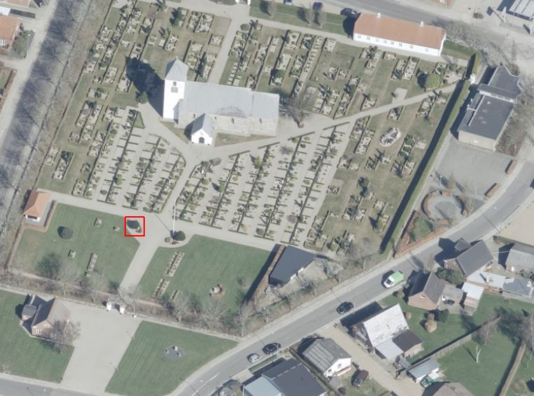
Dies ist ein Luftfoto vom 07.04.2023 von Skråfoto das die Kirche von Horne zeigt. Skråfoto ist eine Webanwendung, die von Klimadatastyrelsen weltweit kostenlos bereitgestellt wird - - Freie Nutzung unter Beachtung der Lizenz: CC BY 4.0. Die Aufnahmen werden seit 2017 alle zwei Jahre erneuert und neben einer Senkrechtaufnahme wird ein Schrägbild aus jeder Himmelsrichtung angeboten, das man über eine Adresssuche aufrufen kann. Den Standort des Runensteins habe ich rot umrandet.
Ein großes Stück des Steines und dadurch auch ein Teil der Runeninschrift fehlen. Vieles deutet daraufhin, dass wir hier auf den gleichen Mann treffen - Tue, Ravns Nachkomme -, den wir bereits sicher von den Inschriften des Læborg- und des Bække-Runensteines kennen. Er wird von daher auf die Zeit von 900 bis 1020 datiert. Die Inschrift verläuft entlang der Steinkontur und wird von rechts unten nach links gelesen.
Im Rahmen meiner 2022er Jütland Wikingertour war ich am Montag, 30.05.2022, vor Ort und habe diese Fotos gefertigt:
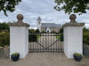 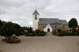 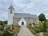 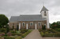 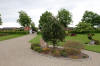 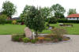
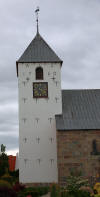 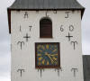 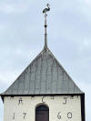 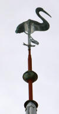 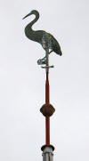 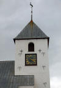 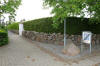
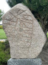 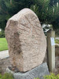 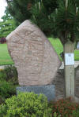 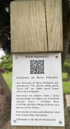 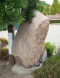 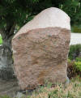 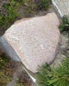
Die älteste Mitteilung über diesen Runenstein stammt aus dem Jahre 1627 von Jon Skonvig (*1600 - 1664, Pfarrer und der Runenzeichner für Ole Worm) Zu der Zeit befand er sich in der Kirchhofmauer.
Ole Worm (*13.05.1588 - 31.08.1654, Arzt, Universalgelehrter und der Begründer der Runologie)
 Bildquelle:
Digitale Sammlung der Königlichen Bibliothek Kopenhagen -
Lizenz:
Public Domain
Bildquelle:
Digitale Sammlung der Königlichen Bibliothek Kopenhagen -
Lizenz:
Public Domain
hatte den dänischen König Christian IV. (*12.04.1577 - 28.02.1648)
 Bildquelle:
Wikipedia - Lizenz:
Public Domain
Bildquelle:
Wikipedia - Lizenz:
Public Domain
dazu bewogen am 11. August 1622 einen Brief an die Bischöfe von Dänemark und Norwegen zu senden, um darüber die Pfarrer im Land aufzufordern alle Informationen zu Denkmälern, Runensteinen, Grabhügel usw. an ihn zu melden, um die älteste Geschichte Dänemarks zu beleuchten. Unterstützer oder gar treibende Kraft war wohl Christian Friis (*4. November 1581 auf Gut Krastrup in Farstrup - 01. Oktober 1639, dänischer Adliger und königlicher Kanzler).
 Bildquelle:
Wikipedia - Lizenz:
Public Domain
Bildquelle:
Wikipedia - Lizenz:
Public Domain
Der Originaltext dieses Briefes lautet auszugsweise: "Wor gunst tillforn. Wy bede Eder och wille, at I Eders mueligste flid ahnwender allewegne wdj Eders stigt att opsøge och antegne alle slags antiquiteter och documenter effter medfølgende fortegnelsis indhold, och att I saadanne med flid lader optegne och engang inden Paaske førstkommendis wdj wortt cantzelie lader indleffuere. Dermed skie wor willghe. Befalendis Eder Gud. Skreffuitt paa wortt [slott] Kiøbenhaffn, den 10. augusti anno 1622. Vnder vort signett.Christian."
Der Pfarrer von Torstrup und Horne aus Varde, Matthias Johannis, schrieb daraufhin am 17.07.1639 an Ole Worm: ,,Herforuden findis i Horne kirchegaardz muer en steen med nogle runebogstaffuer paa, huilche nesten er wkiendelige, saa de iche kand schriffuis".
Übersetzung: "In der Friedhofsmauer von Horne befindet sich ein Stein mit einigen Runenbuchstaben darauf, aber ich kann sie nicht entziffern."
Quelle: Præsteindberetninger til Ole Worm, Bind 1, Indberetninger fra Ålborg og Ribe Stifter 1625-42, Frank Jørgensen, S. 226 (Online verfügbar hier).
Von Jon Skonvig stammt auch die älteste Zeichnung aus dem Jahr 1627, die sich in der Handschrift "AM 367 fol.", Blatt 17r, erhalten hat und hier online abrufbar ist.
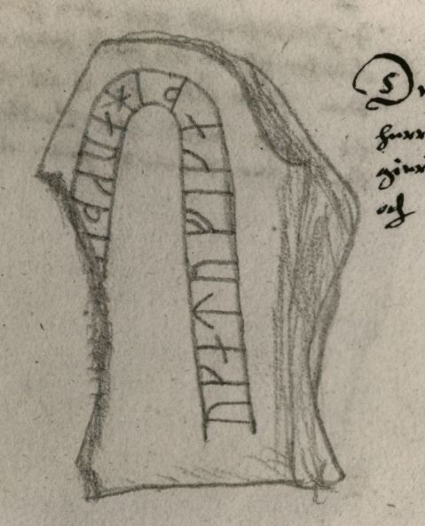
Originalgröße der Zeichnung H: 6,5 cm
Sein Text daneben: "Denne steen findiss Vdi Riber stifft Vdi øster herridt hoss Huornum kircke i den øster kircke gierde ved stetten och Er En haard graa kamp 1 all lang och 3 quaarter bred."
Übersetzung/Maße umgerechnet: "Dieser Stein findet sich im Stift Ribe, im Kirchspiel Øster Herred, bei der Horne Kirche, in der östlichen Kirchhofmauer - es ist ein harter, grauer Stein 62,77 cm lang (1 Elle) und 47,07 cm breit (Kvarter = 1/4 Elle).
Der Digitale Sammlung des Nationalmuseums Kopenhagen entnommen - Lizenz: Public Domain
Die Aufzeichnungen von Jon Skonvig - sechs Handschriften - haben sich in der sogenannten "Arnamagnæanske samling A.M. 366-371 fol." (zu deutsch: Arnamagnäanische Sammlung) erhalten.

Am Mittwoch, 28.09.2022, war ich in der Universität Kopenhagen in der dortigen Arnamagnæanske Samling und durfte das Original - AM 367 fol. - in Händen halten und eingehend fotografieren. Man bat mich aber von einer Veröffentlichung meiner Fotos abzusehen und stattdessen auf die digitalisierte Handschrift über www.handrit.is zu verweisen.
Hier der auf der o.a. Zeichnung von Jon Skonvig basierende Metallschnitt, der in dem herausragenden Runenwerk von Ole Worm (*13.05.1588 - 31.08.1654, Arzt, Universalgelehrter und der Begründer der Runologie) - Danicorum Monumentorum Libri Sex, Hafniae, 1643, auf S. 325 abgebildet ist.
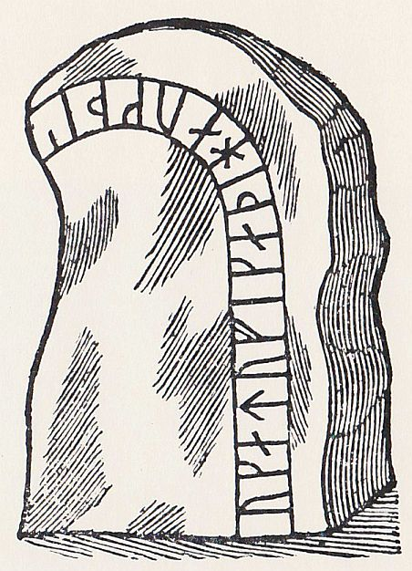
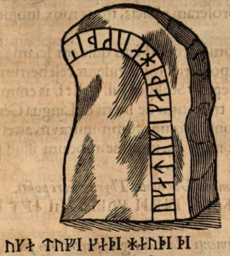
Die linke Zeichnung habe ich aus dem Buch von Erik Moltke "Jon Skonvig og de andre runetegnere", Band 1 - Billeder og kildetext, von 1956 - S. 83, eingescannt - Lizenz: Public Domain - rechts Screenshot aus dem Exemplar aus der Bayerische Staatsbibliothek / MDZ Münchener DigitalisierungsZentrum Digitale Bibliothek - urn:nbn:de:bvb:12-bsb10800415-0 - Seite 325 - abgerufen 24.11.2022
Der Runenstein sollte aufgrund einer königlichen Verfügung vom 9.2.1652 nach Kopenhagen versandt werden (siehe: Nordisk Tidsskrift for Oldkyndighed, Band 1, 1832, S. 326). Dieser Anweisung kam man in Horne, wie andernorts auch, jedoch nicht nach. Seitens Kopenhagen wurde nicht nachgehakt, da dort 1654 die Pest ausbrach, was auch Ole Worm noch im gleichen Jahr den Tod brachte.
Neben der Veröffentlichung durch Ole Worm (siehe unten) findet sich die nächste Erwähnung des Runensteins bei Johannes Meier (1660, Lehrer und Verfasser) in seinem Werk Liber monumentorum Danicorum, qvi monumenta Danica Olai Wormii partim emendat partim locupletat (pdf-Datei anhand eigener Fotos von mir erstellt) von 1654 (Blatt 30) - Königlichen Bibliothek in Kopenhagen - GKS 2371 kvart

Die Jahreszahl von "1654" auf dem Titelblatt (S. 2) soll von Erich Christian Werlauff (*02.07.1781 - 05.06.1871, dänischer Historiker - link-LIVES)
 Bildquelle:
Wikipedia - Lizenz:
Public Domain
Bildquelle:
Wikipedia - Lizenz:
Public Domain
hinzugefügt worden sein. Text und Zeichnungen der Handschrift - auch im Zusammenspiel - sind ansehnlicher ausgeführt als in NKS 799.
In der Königlichen Bibliothek in Kopenhagen hat sich von Johannes Meier aber auch noch eine zweite Handschrift erhalten - NKS 799 kvart - Joh. Mejeri Monumenta Runica in Dania (pdf-Datei anhand eigener Fotos von mir erstellt). Deren Entstehungsdatum ist nicht bekannt. Der Runenstein findet sich auf Blatt 29.
NKS 799 kvart - Joh. Mejeri Monumenta Runica in Dania - Papier - 44 Blatt, Blatt 41-44 unbeschrieben, aus dem 18. Jahrhundert, vormals Nr. 70 in der Manuskript Sammlung von Peder Frederik Suhm (*18.10.1728 - 07.09.1798, der bedeutendste dänisch-norwegische Historiker des 18. Jahrhunderts)
 Bildquelle:
Wikipedia - Lizenz:
Public Domain
Bildquelle:
Wikipedia - Lizenz:
Public Domain
Es handelt sich um
ein Büchlein mit einfachem Pappeinband, der Buchrücken ist aus Leder und
verstärkte Ecken aus Leder weist der Buchdeckel auf. Es hat die Maße: H: ca. 20
cm / B: ca. 17 cm / D: ca. 1,5 cm. Zu den einzelnen Zeichnungen im Büchlein
wurde ein einfacher Maßstab abgebildet.
Bei beiden Exemplaren
weist immer das rechte Blatt der Doppelseite in der oberen Ecke eine mit
Bleistift geschriebene Seitenzahl auf. Diese beiden Werke sind Abschriften von
früheren Werken, die die Zeit nicht überdauert haben.
Vielleicht sind sie in
Kopenhagen beim Großbrand von 1728
vernichtet worden, als neben zahlreichen privaten Beständen auch ca.
35.000 Bücher der Königlichen Bibliothek ein Raub der Flammen wurden!
Die
GKS 2371 kvart soll laut
Ludv. F. A. Wimmer
(*07.02.1839 - 29.04.1920, Philologe und Runenforscher)
und seinen Infos von
Christian Walter Bruun (*10.12.1831 - 28.02.1906, Königlicher Oberbibliothekar - link-LIVES)
 Bildquelle: Fotografie
um 1880 von Fotograf J. Petersen
(*19.03.1829 -
01.02.1905) -
Det Kgl. Biblioteks billedsamling - Lizenz:
Public Domain
Bildquelle: Fotografie
um 1880 von Fotograf J. Petersen
(*19.03.1829 -
01.02.1905) -
Det Kgl. Biblioteks billedsamling - Lizenz:
Public Domain
von Niels Foss selbst abgeschrieben worden sein. Er hat die Texte laut den Studien von Erik Moltke (*04.04.1901 - 19.10.1984, Runologe, Historiker - link-LIVES)
 Bildquelle: Scan von Buchumschlag "Runerne i Danmark og ders
oprindelse" - Erik Moltke - 1976 - Lizenz:
CC-BY-SA
Bildquelle: Scan von Buchumschlag "Runerne i Danmark og ders
oprindelse" - Erik Moltke - 1976 - Lizenz:
CC-BY-SA
offenbar überarbeitet, verkürzt oder geändert und seine eigene
Orthografie eingebracht (z.B. alt: haffuer - bei Foss: haver / tyck/tyk /
kircke/kirke / oc/og u.a.).
In der
NKS 799 kvart hingegen steht auf der Seite 37 links unten "Niels
Knudsen Jerne" und seine Handschrift lässt vermuten, dass er die
gesamte Abschrift angefertigt hat. Er war offenbar ein professioneller Schreiber
und könnte mit dem Niels Knudsen identisch sein, der
1728 "Skriverkarl" auf dem Holmen (Stadtviertel von
Kopenhagen) war, also ein Mann der schnell viele Texte schreiben und liefern
konnte. Er wurde am 08.11.1737 zum "ekvipageskriver"
ernannt. Es scheint dass er sich entgegen
Niels Foss sehr eng an das Original gehalten hat.
Offenbar gab es laut dem Katalog über die Büchersammlung
von
Peter
Hansen Resens (*17.06.1625 -
01.06.1688) "Bibliotheca
Regiæ Academiæ Hafniensi donata" Hafniæ (Kopenhagen) von
1685 - siehe
S. 273 - früher noch ein drittes Werk von
Johannes Meier mit dem Titel "Johan. Meieri
liber MS. de Monumentis Runicis sive antiqvis Danicics".
Quellen: Erik
Moltke -
Jon Skonvig og de andre runetegnere. Et bidrag til runologiens historie i
Danmark og Norge I-II,
1956-58
Band 2 -
Kapitel 13 / eigene Recherchen
Bei meinem dortigen Besuch am 26.09.2022 durfte ich diese beiden Handschriften (nach Online Vorbestellung) in Händen halten und komplett fotografieren.
Es gibt auch aus dem Jahr 1687 Informationen aus einer "Præsteindberetninger". Ende des 17. Jahrhunderts hatte nämlich Peder Hansen Resen (*17.06.1625 - 01.06.1688, Jurist und Historiker)
 Bildquelle:
Wikipedia - Lizenz:
Public Domain
Bildquelle:
Wikipedia - Lizenz:
Public Domain
über die Bischöfe um Rückmeldungen der örtlichen Pfarrer zu den Altertümern in deren Region gebeten.
In den "Indberetninger til P. Resen 1687" findet sich ein Eintrag zum Runenstein von Horne - Dazu: Samlinger til jydsk historie og topografie, Band X, 1884-85, Smaastykker - Meddelte af O. Nielsen - I. Thorstrup og Horne Sogne, Oster Home Herred - S. 5:
"Udi kirchegaards muren paa den sønder side allenæst til den østerste stette sidder en stor graa kampsteen, som paa udsiiden ganske er udhugget med rune bogstafuer, huilche iche jeg eller nogen i egnen kand læse. Viidere findes iche i nogen af begge mine sogne, men at det, som annoterit er, saaledis er i sandhed, testerer jeg - Christen Friis, egh. P. loci et præp."
Übersetzung: "In der südlichen Kirchhofeinfriedung, neben dem östlichsten Teil, sitzt ein großer grauer Felsbrocken, der an der Außenseite mit Runenbuchstaben versehen ist, die weder ich oder sonst jemand in der Gegend lesen kann - Des Weiteren gibt es nichts in meiner Pfarrerei, aber das dass, über das ich berichte wahr ist, bezeuge ich - Christen Friis, örtlicher Pfarrer."
Peder Hansen Resen hat daraus mit dem von ihm über 20 Jahre gesammelten Material das großartige Werk "Atlas Danicus", bestehend aus letztlich 39 Folianten, geschaffen. Nur geringe Teile wurden aber schon zu seiner Lebzeit gedruckt. Die Folianten wurden wenige Jahre nach seinem Tod 1692 an die Königliche Bibliothek Kopenhagen übergeben. Aufbewahrt wurden sie auf dem Dachboden der Trinitatis Kirche. Dort wurden sie fleißig studiert, abgeschrieben und zeitweise ausgeliehen. Leider wurde dann ein Großteil davon beim Kopenhagener Großbrand 1728 zerstört. Es hat sich neben einigen Originalseiten - siehe Arnamagnäanische Sammlung - AM 359 fol. / AM 360 fol. / AM 361 fol. und AM 362 fol. (digitalisiert) - nur eine (verkürzte) Abschrift und außerdem Kupferstiche von etwa 200 Städteansichten aus der Vogelperspektive erhalten. Originale dieser AM 359/360/361 fol sind über die Universität Kopenhagen - Institut for Nordiske Studier og Sprogvidenskab (NorS) - AM 359 fol / AM 360 fol / AM 360 fol (Karten) / AM 361 fol - in sw abrufbar. Eine zweite (verkürzte) Ausgabe war von Vincent Lerche (*04.04.1666 - 28.07.1742, Jurist, Architekt) beauftragt worden, diese wurde aber beim Brand von Schloss Christiansborg im Jahr 1794 vernichtet.
In der Königlichen Bibliothek in Kopenhagen wird seit 1803 in der Sammlung Uldall (186 folio) diese einzige verbliebene Ausgabe, die in den 1750er Jahren durch Laurids de Thurah (*04.03.1706 - 06.09.1759, dänischer Architekt, Baumeister, Architekturhistoriker und Topograf)
 Bildquelle:
Wikimedia - Lizenz:
Public Domain
Bildquelle:
Wikimedia - Lizenz:
Public Domain
aus verstreuten Resten des Atlas Danicus in 7 Bänden rekonstruiert worden war, aufbewahrt:
Wie diesem Titel zu entnehmen ist, gehörte dieses Exemplar vormals Adam Gottlob Graf von Moltke (*10.11.1710 - 25.09.1792, Staatsmann, Diplomat)
 Bildquelle:
Wikimedia - Lizenz:
Public Domain
Bildquelle:
Wikimedia - Lizenz:
Public Domain
Nach dessen Tod erwarb Herman Treschow (*11.12.1739 - 02.05.1797, Professor für Theologie, Pfarrer) diese Ausgabe. Peter Uldall (*29.06.1743 - 11.11.1798, Jurist, Theologe)
 Bildquelle:
Wikimedia - Lizenz:
Public Domain
Bildquelle:
Wikimedia - Lizenz:
Public Domain
wiederum kaufte sie für 170 Rigsdaler (Rigsdaler zu 24 Skilling - damals 1 ½ Mark) nach dessen Ableben. Er hatte aber nicht lange Freude daran, denn er starb ein Jahr später an einem Schlaganfall. Sein Sohn, Justizrat W. A. Uldall, schenkte diese Ausgabe der Kgl. Bibliothek im Jahr 1803, wo dieses großartige Werk noch heute verwahrt wird (Ein Band hat übrigens die Größe H/B/D von 40 cm x 29,5 cm x 9,5 cm).
Im Atlas VI. ist auf der Seite 764-65 ein Eintrag / Zeichnung vom Runenstein enthalten, die ich am 28.09.2022 vor Ort fotografieren durfte.


#/media/Datei:Fotoreproductie_van_een_schilderij,_voorstellende_een_portret_van_Christian_Friis_til_Kragerup_Christian_Friis_(til_Kragerup)_(titel_op_object),_RP-F-2001-7-742-16.jpg){kind=link}


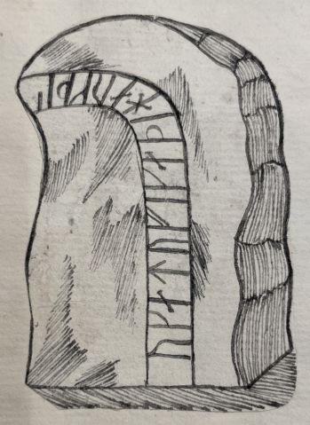

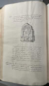

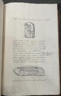
An dieser Zeichnung ist sehr gut zu erkennen, dass sie ausgeschnitten und eingeklebt wurde. Dies bei allen Zeichnungen in dieser Abschrift des Atlas Danicus so geschehen.
Text übersetzt: "Östlicher Bezirk - Im östlichen Bezirk bei der Kirche im Dorf Horne gibt es einen unbehauenen Stein, der eine Elle lang und dreieinviertel breit ist und der - S. 765 - mit den folgenden Buchstaben folgendermaßen beschrieben wird :
...Zeichnung...
Mit gebräuchlicheren Buchstaben kann dasselbe wie folgt geschrieben werden: Uka Tufi gadi Raug di. Die Bedeutung scheint zu sein: Und Tuffe hat diesen Stein gemeißelt. Da diese Worte keinen vollständigen Abschnitt darstellen, zeigen sie, dass dieser Stein Teil eines Denkmals war und daher nicht fertiggestellt wurde."
Aus dem Lateinischen ins Dänische übersetzt in "Atlas Danicus VI D Ribe Stift, udgivet af Susannen Lykke Nielsen, 1987, S. 152", worüber ich hier eine Übersetzung ins Deutsche vorgenommen habe
In Erik Pontoppidans (der Jüngere, *03.09.1698 - 20.12.1764)
 Bildquelle:
Wikipedia - Lizenz:
Public Domain
Bildquelle:
Wikipedia - Lizenz:
Public Domain
Werk "Den danske Atlas - Tomus V, 2. Bind, Cap. 8, von 1769 findet sich die nächste Erwähnung des Runensteins: "I Kirkegaards Murens syndre Side sidder en Runesteen, som før maae have staaet paa en Høi giort af en ved Navn Tufi, Wormii Mon., pag. 325". (S. 3 zu d in der pdf Datei).
Übersetzung: "Auf der südllichen Seite der Friedhofsmauer befindet sich ein Runenstein, der auf einem Hügel gestanden haben muss, hergestellt von einem Mann namens Tufi, Wormii Mon., pag. 325."
Diese Zeichnung (Originalgröße: 19 x 25 cm) von dem Runenstein aus dem Jahr 1772 von Søren Abildgaard (*18.02.1718 - 02.07.1791, Zeichner, Kupferstecher und Geologe)
 Bildquelle:
Jellingprojektet - Lizenz:
Public Domain -
http://www5.kb.dk/images/billed/2010/okt/billeder/object444188/da/
Bildquelle:
Jellingprojektet - Lizenz:
Public Domain -
http://www5.kb.dk/images/billed/2010/okt/billeder/object444188/da/
gibt er in seinem Tagebuch VIII, Blatt 15, wieder.
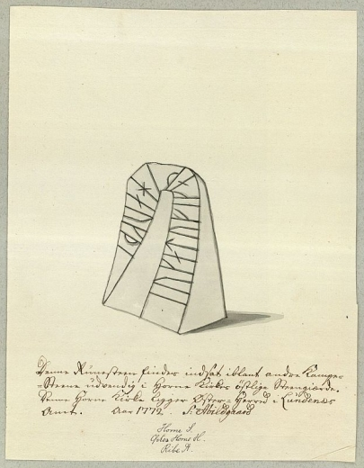
Sein Text dazu: "Denne Runesteen findes indsat iblant andre Kampesteen udvendig i Horne Kirkes østlige Steen giærde. Samme Horne Kirke ligger Øster-Herred i Lundenæs Amt."
Übersetzung: "Dieser Runenstein befindet sich zwischen anderen Felsbrocken draußen im östlichen Steinzaun der Kirche von Horne. Dieselbe Horne-Kirche befindet sich in Øster-Herred in der Provinz Lundenæs."
Der Digitale Sammlung des Nationalmuseums Kopenhagen entnommen - Lizenz: CC BY-SA 4.0
Søren Abildgaard hat außerdem noch diesen Eintrag in seinem "Dagbog VIII" aus den Jahren 1772-74 auf der S. 15 vorgenommen, wobei er zuerst anmerkt, dass die Kirche in Horne Dank A. C. Theilman in einem sehr guten Zustand ist (siehe auch unten).
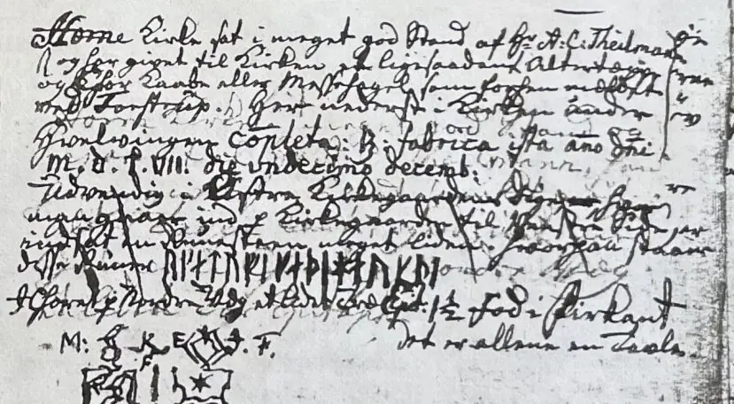

Seine Tagebücher befinden sich heute im Antiqvarisk-Topografisk Arkiv in Kopenhagen. Dies ist die Fotografie einer Kopie, die auch dort vorgehalten wird und ich dort am 28.09.2022 fertigen durfte.
In dem Buch von Johan Gustav Liljegren (*27.02.1791 -02.06.1837, schwedischer Nationalarchivar und Archäologe) Run-urkunder von 1833, S. 173, findet sich unter "1536" ein kurzer Eintrag zur Inschrift dieses Runensteins.
Im Jahre 1872 wurde er auf Geheiß des 20-jährigen Fräuleins Ingeborg Rosenørn (Ingeborg Christiane Rosenørn-Teilmann, geborene Rosenørn - *27. Juli 1852 in Fredericia - 23. April 1929 in Nørholm, spätere Erbin des Stammsitzes Nørholm und Autorin - link-LIVES)
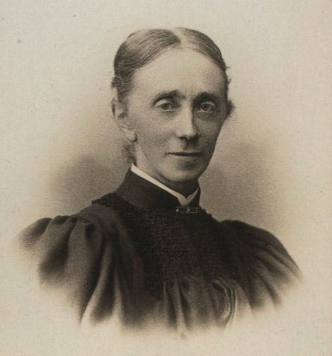
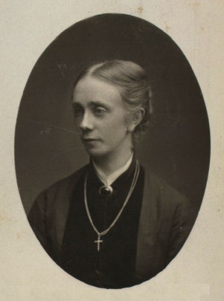
Bildquelle: Digitale Sammlung - Königliche Bibliothek in Kopenhagen - rechts - jeweils Fotograf: Neuhaus, Even (*6.2.1863 - 20.4.1946) - Lizenz: Public Domain
aus der Kirchhofmauer entfernt und zum Herrenhof Nørholm verbracht (Luftlinie ca. 6 km - südöstlich gelegen). Sie ließ den Runenstein auf einem kleinen Hügel im Gartenpark vom Herrenhof Nørholm aufstellen. Im Jahr 1690 hatte die Krone die Horne Kirche verkauft. Sie ging danach durch mehrere Hände bis sie ab 1742 in den Besitz der Familie Teilmann kam. Noch heute ist die Windfahne auf dem Kirchturm ein Kranich, der im Wappen des Adelsgeschlechts Teilmann zu finden ist (siehe auch unten die Karte von 1784). An der südlichen Kirchturmwand, direkt unter dem Dach, ist der Schriftzug "ACT" und die Jahreszahl 1760 angebracht. Es steht für deren Vorfahr Andreas Charles Teilman (*?.12.1723 - 27.07.1790)


Bildquelle: Ravnholt, A - 1934 - Nørholm : Gaardens Historie gennem 500 aar - S. 14
der damals Umbauarbeiten am Kirchturm vornehmen ließ. Er, der 1751 in den Adelsstand erhoben wurde, ließ auch das noch heute bestehende Hauptgebäude des Herrenhofes in den Jahren 1776-80 neu aufführen. Zu seiner Person gibt es in der Digitale Sammlung der Königlichen Bibliothek eine alte Fotografie eines Denkmals, der Standort ist mir unbekannt.
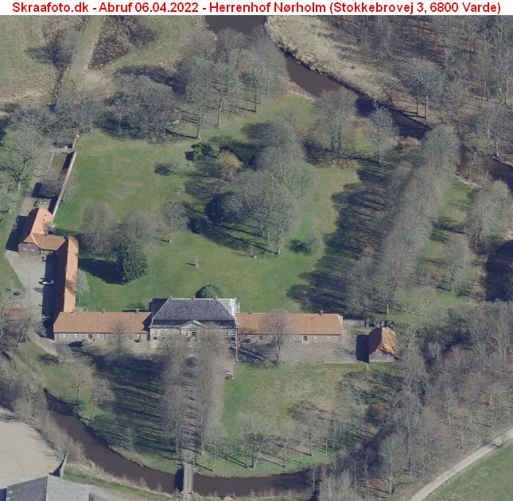
Neueres Bild vom 07.04.2023 über Klimadatastyrelsen - Abruf dieses Luftfotos - angefertigt am 03.04.2021 - am 06.04.2022.
Skråfoto ist eine Webanwendung, die von der Dänische Agentur für Datenversorgung und Infrastruktur weltweit kostenlos bereitgestellt wird - Lizenz: CC BY 4.0. Die Aufnahmen werden alle zwei Jahre erneuert und neben einer Senkrechtaufnahme wird ein Schrägbild aus jeder Himmelsrichtung angeboten, das man über eine Adresssuche aufrufen kann
Prof. Julius Magnus Petersen (*04.09.1827 - 31.01.1917, Archäologischer Zeichner und Restaurator - link-LIVES - Bestattungsprotokoll)
 Bildquelle: Fotografie
von 1903 von Fotograf Marius Christensen
(*24.6.1874 -
25.6.1907) -
Det Kgl. Biblioteks billedsamling - Lizenz:
Public Domain
Bildquelle: Fotografie
von 1903 von Fotograf Marius Christensen
(*24.6.1874 -
25.6.1907) -
Det Kgl. Biblioteks billedsamling - Lizenz:
Public Domain
fertigte die u.a. Zeichnung für das Runenwerk von Prof. P. G. Thorsen (*07.08.1811 - 06.05.1883, Bibliothekar, Runenforscher und Historiker - link-LIVES - Artikel: Levnedsbeskrivelser af de ved Københavns Universitets Firehundredaarsfest promoverede Doktorer, Illustreret Tidende 1882, Nr. 1235 - vom 27.05.1833 / Grabstein in Varde / Eheschließung in Varde am 19. August 1848) an.
 Bildquelle: Fotografie zw. 1863-1900 von
Fotograf Budtz Müller (*26.12.1837 -
30.12.1884) -
Det Kgl. Biblioteks billedsamling - Lizenz:
Public Domain
Bildquelle: Fotografie zw. 1863-1900 von
Fotograf Budtz Müller (*26.12.1837 -
30.12.1884) -
Det Kgl. Biblioteks billedsamling - Lizenz:
Public Domain
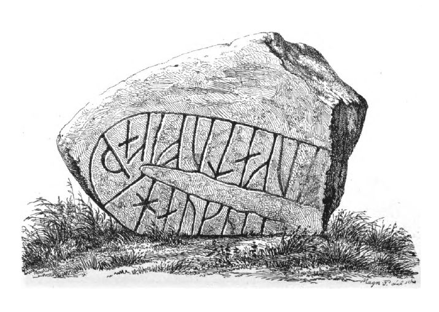
"De danske Runemindesmærker, beskrevne og forklarede af P. G. Thorsen Anden Afdeling - Jyllands Runemindesmærker tilligemed Meddelelser om alle Øernes, Afbildninger og Text, II. Text, 1880". Die Zeichnung findet sich im "Band I. Afbildninger - Nr. 9" von
P. G. Thorsens Nachlass (Bezeichnet als: P. G. Thorsens optegnelser, tegninger m.m. vedrørende runer og runemindesmærker - überführt aus der Kopenhagener Universitätsbibliothek 1929 - Gemäß Ministerialschreiben vom 04.03.1929; früher benannt als Additamenta 612 kvart) - findet sich in der Königlichen Bibliothek unter NKS 3296 kvart (in mehreren einzelnen Pappschachteln). In der Pappschachtel Nr. 5 ist zu Horne etwas dabei. Sogar eine Visitenkarte von Magnus Petersen wird dort verwahrt (Auf deren Rückseite befindet eine einfache Skizze zu den Jelling Grabhügeln).
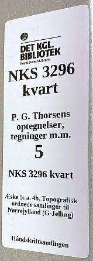

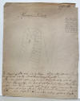

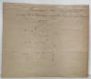
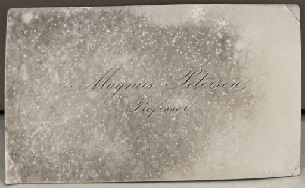
Ich nehme mal an, dass die beiden Zeichnungen mit der Handschrift von P. G. Thorsen im Jahr 1838 ausgeführt wurden. Zu der ersten Skizze wird angeführt, dass sie der Zeichnung von Søren Abildgaard nachempfunden wurde, was ja auch eindeutig erkennbar ist (siehe oben). Magnus Petersen scheidet meines Erachtens aus, da er alle seine Werke immer eindeutig signiert hat.
In der Pappschachtel mit der Nummer 17 findet sich darüberhinaus noch diese Zeichnung des Runensteins von Magnus Petersen, die er auf den 31.07.1873 datiert hat. Sie dürfte augenscheinlich als Druckvorlage - siehe oben - gedient haben.

Diese Zeichnung - Original siehe unten - fertigte Prof. Ludv. F. A. Wimmer (*07.02.1839 - 29.04.1920, Philologe und Runenforscher - link-LIVES - Politiets registerblade - Bestattungsprotokoll)

Bildquelle: Fotografie zw. 1877-1900 von Fotograf Hansen & Weller - Det Kgl. Biblioteks billedsamling - Lizenz: Public Domain
"De danske runemindesmærker undersøgte og tolkede af Ludv. F. A. Wimmer:, Andet bind, Runestenene i Jylland og på øerne. 1899-1901" - Nr. 7, S. 55 an - eigener Scan aus der in meinem Besitz befindlichen Ausgabe.
Ludv. F. A. Wimmer hat den Runenstein persönlich vor Ort am 28.08.1878 und am 25.07.1892 untersucht.
Er hat seine jahrelangen Aufzeichnungen der
"Kgl.
Bibliotek" in
Kopenhagen
überlassen. Ein
Verzeichnis darüber wurde 1915 in Buchform herausgegeben -
In seinen Unterlagen in der Königlichen Bibliothek befinden sich unter "III - Originaltegninger af de danske Runemindesmærker, udførte paa Undersøgelsesrejserne af Magn. Petersen og kontrollerede paa Stedet af Ludv. Wimmer, samt Prøvetryk af de paa Grundlag af de nævnte Tegninger, Aftryk o. s. v. til De danske Runemindesmærker" udførte Afbildninger med Wimmers Rettelser" zu dem Runenstein von Horne unter der Nr. 24 diese handschriftlichen Aufzeichnungen von 1878 und 1892, die ich am 27.09.2022 fotografieren durfte.


Ich habe hier bewusst die Miniaturen eingestellt, die über Mausklick vergrößert werden und so eine viel bessere Ansicht bieten.
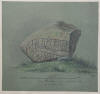 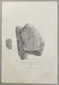


Der schwedische Wissenschaftler Erik Brate (*13.06.1857 - 11.04.1924, Linguist und Runologe)
 Bildquelle:
Wikipedia
- Lizenz:
Public Domain
Bildquelle:
Wikipedia
- Lizenz:
Public Domain
stellt in dem Buch "Arkiv för nordisk filologi", Band 29 - 1913 - in dem er in einem Artikel auf das zuvor erschienene Runenwerk von Ludv. F. A. Wimmer eingeht (S. 181-193) - ab der S. 188 ff. Vermutungen zu der ursprünglichen Größe des Horne Runensteins an "...wobei die Inschrift viel länger gewesen sein könnte, als Wimmer annimmt...". Er verweist dabei auf die beiden Runensteine von Östra Vemmenhög, Dybäck (DR 268 / SK96 / L1434) und von Gårdstånga II (DR 329 / SK 8 / L1416), die eine vergleichbare Runenbandschleife haben.
Fotografie von Erik Moltke (*04.04.1901 - 19.10.1984, Runologe, Historiker - link-LIVES) vom 21.05.1930.
Bildquelle: Scan von Buchumschlag "Runerne i Danmark og ders
oprindelse" - Erik Moltke - 1976 - Lizenz:
CC-BY-SA
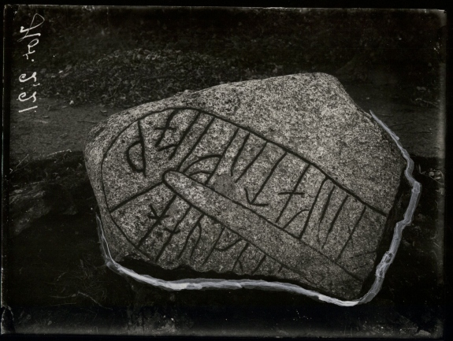
Der Digitale Sammlung des Nationalmuseums Kopenhagen entnommen - Lizenz: CC BY-SA 4.0
Heute befindet sich der Runenstein wieder im Kirchhof von Horne, wohin er im Jahr 1953 zurückgebracht worden war.
Im Vorfeld zu dem 2016 erschienenen Buch von Lisbeth M. Imer (*1973, Runologin am Nationalmuseum Kopenhagen) "Danmarks Runesten - en fortælling" reiste sie mit dem Fotografen Roberto Fortuna zur Bestandsaufnahme durch die Lande. Dieser hat die Runensteine abends bei Dunkelheit mit Schräglicht aufgenommen und darüber wirklich herausragende Fotos erzielt. Diese Aufnahme entstand im November 2011.
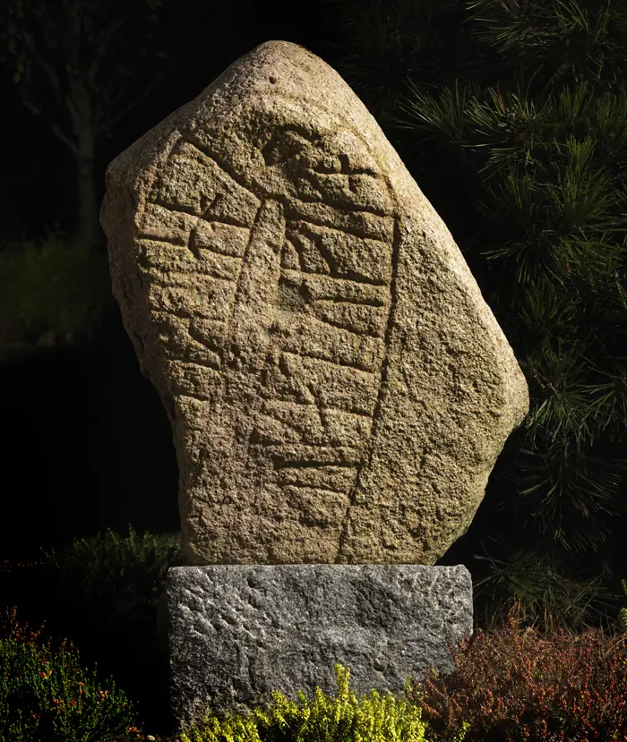
Der Digitale Sammlung des Nationalmuseums Kopenhagen entnommen - Lizenz: CC BY-SA 4.0
Im Jahr 1953 schrieb Hans Kristian Kristensen (*17.09.1895 - 24.07.1981, Schulleiter in Lunde, Historiker, Vorstandsmitglied in der "Jysk selskab for historie" - Portraitfoto) in dem Artikel Runestenen i Horne en Hornelund-sten (siehe Literaturhinweise unten), dass vor 5 Jahren die Straße zwischen Hornelund hinunter zum Fluss Linding Au modernisiert wurde. Dazu ließ der Hofbesitzer Hans C. Østergård (*10.05.1914 - 06.02.2006) aus Hornelund zahlreiche Steine, die sich auf seinem Hof angesammelt hatten zerkleinern, um sie als Wegmaterial einzusetzen. Hierbei fand sich in seinem Steinhaufen auch ein Bruchstück, auf dem offenbar Runen waren. Der Stein wurde von daher zunächst zur Seite gelegt. Der Steinmetz und Østergård entschieden dann aber doch ihn zu zertrümmern, da es nur wenige Runen waren, und das Bruchstück deshalb wohl nicht wichtig sei. Nachdem der Horne Runenstein 1953 vom Herrenhof Nørholm kommend wieder im Kirchhof von Horne aufgestellt wurde (siehe oben) sah Hans C. Østergård diesen. Dabei erkannte er zu seiner Überraschung, dass das Bruchstück von seinem Hof ein Stück dieses Runensteinfragmentes gewesen sein musste. Die Steinfarbe, auch die Steinbeschaffenheit und die Größe der Runen passten überein. Aber unglücklicherweise hat man den Stein ja damals zerkleinert! Aus dem Fundort schloss der Autor dann, dass der ursprüngliche Standort wohl nicht in Horne, sondern eher bei einem großen Häuptlingshof in Hornelund bei der Linding Au war. Er verweist dazu auf seinen Aufsatz "Hornelunde" in dem Werk "Øster Horne Herred" (Herausgegeben vom "Historisk Samfund for Ribe Amt", 1944, S. 197-99), in dem er diese These erstmals vorbrachte. Seiner Einschätzung nach könne der Runenstein bei einem Opferhain gestanden haben (vergleiche das Wort "lund" in Hornelund - Lund = Hain) und schlug vor, dass er besser Hornelund Runenstein heißen müsse. Der auf dem Runenstein genannte Tue, Ravns Nachkomme, sei demnach der Wikingerhäuptling dem die Siedlung Hornelund gehört hatte, folgert der Autor weiter.
H. K. Kristensens These wird durch einen vom Knecht Anton Jensen am 19. April 1892 beim Pflügen auf dem Feld seines Herrn Laust Johansen bei Hornelund gefundenen wikingerzeitlichen Goldschatz gestützt. Es ist einer der spektakulärsten Goldfunde in Dänemark, zeugt von herausragender Goldschmiedekunst und hat ein Gesamtgoldgewicht von 216 Gramm.
Die beiden runden Goldfibeln, die als die schönsten der dänischen Wikingerzeit bezeichnet werden, haben einen Durchmesser von 8,5, bzw. 8,6 cm und wiegen 62, bzw. 76 Gramm. Beide sind aus je zwei gewölbten Blechen hergestellt, von denen die obere reliefiert gepreßt und überreich mit Filigran und Granulation verziert ist, vorherrschend ist Pflanzenornamentik. Die links abgebildete wird von drei kreisförmigen Figuren um das Zentrum herum und einem Herzmuster am Rand dominiert. Bei der rechten dominieren große Tierköpfe, die die Ornamentik in vier durchbrochene Felder teilen. Im Zentrum und in der Mitte jedes Feldes sitzt eine leere Fassung, um den Rand läuft eine Ranke. Die beherrschende Pflanzenornamentik wird Einflüssen aus Westeuropa verdankt. Die Technik ist jedoch skandinavisch. Die rechte Fibel ist ein Unikat, während die linke unter Verwendung einer Patrize hergestellt wurde. 1984 wurde in Søndersø bei Viborg ein sensationeller Fund gemacht. Eine runde, gewölbte Patrize mit flacher Unterseite, Durchmesser 6,5 cm, aus Blei war bei einer Siedlungsgrabung aufgetaucht - sieh u.a. Foto. Deren Muster kommt der hier links abgebildeten Hornelundfibel sehr nahe und könnte vielleicht tatsächlich mit ihr hergestellt worden sein (Wikinger Waräger Normannen - Ausstellungskatalog Berlin 1992 - Nr. 106 und 107 - S. 254).
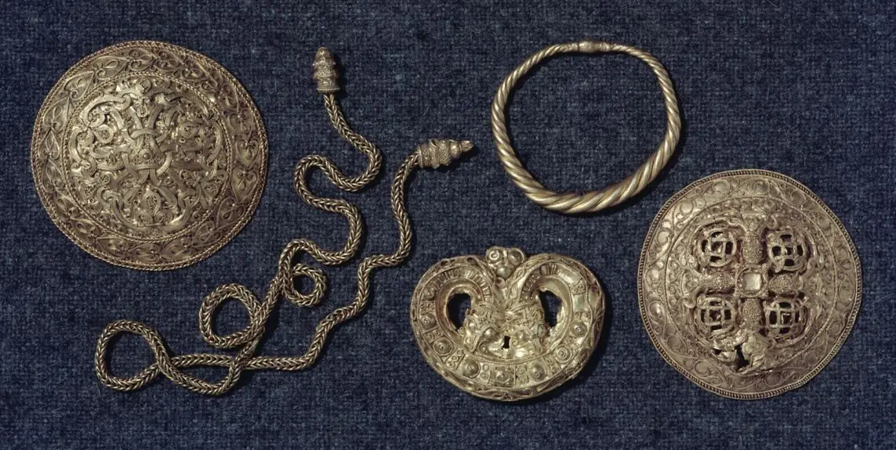
Quelle: Digitale Sammlung Nationalmuseum Kopenhagen - Lizenz: CC BY-SA 4.0 - Fotograf: Niels Elswing - Bild von mir lediglich zugeschnitten und Größe angepasst.
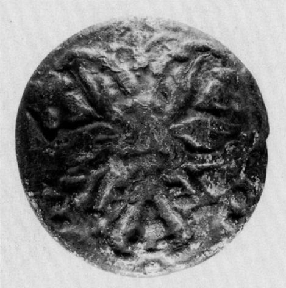
Quelle: A Viking-Period and Medieval Settlement at Viborg Søndersø, Jutland - Hans Krongaard Kristensen - 1988 - Journal of Danish Archaeology vol. 7 - S. 194 - Foto: Arne Vindum, Viborg Stiftsmuseum
Literaturhinweis: Spor efter guldsmede fra vikingetiden i Viborg - ein Artikel zu dem Fund dieser Patrize in Viborg, die vielleicht zur Anfertigung der Hornelund Schalenfibel genutzt wurde.
In der Kopenhagener Zeitung "Dagbladet" finden sich zu dem Schatzfund zwei Einträge aus dem Jahr 1892:
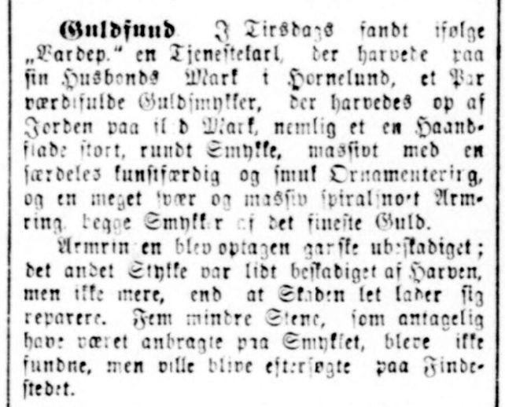
Ausgabe vom Samstag, 23.04.1892, Seite 2 - Übersetzung: "Goldfund. Am Dienstag wurde laut "Vardeposten" von einem Knecht, der den Acker seines Herrn bei Hornelund pflügte, ein Paar wertvolle Goldschmuckstücke gefunden. Er pflügte aus dem Boden nämlich ein handflächengroßes, rundes Schmuckstück, mit einer sehr kunstvollen und schönen Ornamentik, sowie ein sehr schweres und massiv gewundenes Armband, beides Schmuckstücke vom feinstem Gold. Das Armband wurde ziemlich unbeschädigt geborgen; der andere Schmuck war von der Egge etwas beschädigt, aber nicht mehr als dass der Schaden leicht repariert werden kann. Fünf kleinere Steine, die vermutlich auf dem Schmuck angebracht waren, wurden nicht gefunden. Man will den Fundort später nochmals absuchen."
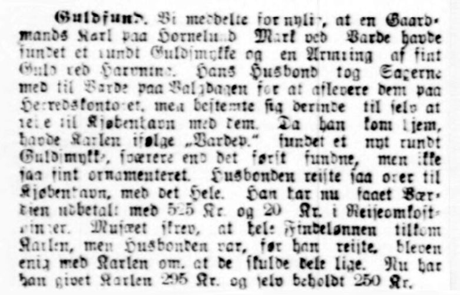
Ausgabe vom Dienstag, 03.05.1892, S. 3 - Übersetzung: "Goldfund. Wir haben kürzlich berichtet, dass der Knecht eines Bauern auf einem Feld bei Hornelund Mark bei Varde einen runden Goldschmuck und einen Armring aus feinstem Gold beim Pflügen gefunden hat. Der Landwirt nahm die Teile und wollte sie beim Landratsamt abgeben, entschied sich dort aber selbst zu einer Reise mit ihnen nach Kopenhagen. Als er wieder nach Hause kam, hatte der Knecht laut "Vardeposten" einen neuen runden Goldschmuck gefunden, härter als der erste, aber nicht so fein verziert. Der Bauer reiste abermals nach Kopenhagen mit dem Stück. Der Fundwert wurde ihm jetzt mit DKK 525 und DKK 20 für Reisekosten ausgezahlt. Das Museum schrieb vor, dass der gesamte Finderlohn dem Knecht zustehe, aber da der Bauer die Reise auf sich genommen hatte, einigte er sich mit dem Knecht, dass sie zu gleichen Teilen teilen sollten. Jetzt hat er dem Knecht 295 DKK ausbezahlt und für sich selbst 250 DKK behalten." Das war viel Geld zu dieser Zeit!
Zu diesem Goldschatz gibt es laut "Hornesognearkiv.dk" auch noch diese Anekdote, die von dem inzwischen verstorbenen Landwirt Hans Østergaard, (*10.03.1914 - 06.02.2006), Hornelund, erzählt worden sei: " Der Knecht Anton Jensen des Landwirts Laust Johansen, pflügte an einem Frühlingstag einen Acker. Auf der anderen Seite des Feldes war der Knecht des Nachbarbauern Jes Pallesen dabei eine Lunchpause zu machen. Das Lunchpaket stellte er auf der Feldeinfriedung ab. Anton Jensen hob gerade die Egge an, als an der etwas hängenblieb. Er bot es dem anderen Knecht im Tausch gegen etwas zu Essen an. Der gab von seinem Essen etwas ab, wollte aber nichts dafür. Sie setzten sich zum Essen zusammen und Anton Jessen rieb das Fundstück dabei an seinem Hosenbein. Sie meinten beide, es müsse was aus Messing oder Kupfer sein. Anton Jensen nahm es mit nach Hause. Für den Finderlohn kaufte er sich später ein kleines Stück Land. Im Jahr 1894 kaufte Hans Østergaards Vater, Jes Christian Østergaard (*15.05.1868 - 08.10.1934), den Nachbarhof von Laust Johansen und damit auch den Boden, in dem die goldenen Schmuckstücke gefunden worden waren.
Literaturhinweis: Hornelund sad på guldet og visionerne
In den Aufzeichnungen des Nationalmuseums in Kopenhagen zu dem Goldfund finden sich u.a. zwei Karten, in denen die Fundstelle einmal 1893 durch A. P. Madsen und einmal von Th. Thomsen, der die Gegend 1915-16 bereiste, angekreuzt wurde. Aber leider sind die nicht identisch! Das Varde Museum mit Lene B. Frandsen entschied sich 1993 - etwa 100 Jahre nach dem spektakulären Fund - zu Nachforschungen. Man suchte dabei auch die Unterstützung durch einen der erfahrensten Metalldetektorsucher des Landes, Torben Jørgensen aus Odense, um ein geeignetes Gebiet ausfindig zu machen, das mit der Beschreibung des Nationalmuseums "auf ebenem Boden am Fuße des niedrigen Hügels" übereinstimmte. Aber wegen miserablem Wetter war das so nicht möglich, worauf man sich zum Graben entschied. Am 01.11.1993 setzte man den Spaten in der Gegend an, die A. P. Madsen angekreuzt hatte. Im Umfeld wurden insgesamt sieben Ausgrabungsfelder nach verschiedenen Kriterien angelegt (Madsens Kreuz auf der Karte, Luftbilder, der höchste Punkt auf dem Acker, Angaben des damaligen Gutsbesitzers Jes Østergård, der die Stelle von seinem Vater gezeigt bekam usw.) und auch mit Metalldetektoren abgesucht. Es ergaben sich darüber zwar kleinere Funde aus anderen Epochen (Pfostenlöcher, Keramikscherben u.a.), aber nichts was aus der Wikingerzeit stammte und somit nichts das zu dem Hornelund Schatzfund von 1892 gepasst hätte. Man äußerte aber damals die Hoffnung, dass vielleicht doch noch irgendwann etwas derartiges ans Tageslicht kommen könne. Wie Recht sie doch hatten!
Auf dem gleichen Acker bei Hornelund hat nämlich der Amateurarchäologe Pawel Piotr Konieczny nun am 09.04.2014 mit seinem Metalldetektor einen neuerlichen Gold- und Silberschatz entdeckt. Zunächst fand er in ca. 15-20 Zentimeter Tiefe 24 Silbermünzen und ein Armband aus Gold (Gewicht: 68 Gramm). Natürlich meldete er seinen Schatzfund umgehend. Bei der anschließenden Ausgrabung und Sicherung des Schatzes durch die Archäologen Jens G. Lauridsen und Lars Christian Bentsen von der Archäologie Westjütland, finanziert von der dänischen Kulturbehörde "Kulturstyrelsen", fanden sich weitere 135 Silbermünzen, zumeist aus Deutschland vom Anfang bis Mitte des 11. Jahrhunderts und eine einzige Münze von König Knut dem Großen (1018-1035). Die Schatzniederlegung erfolgte sicherlich kurz nach der jüngsten Prägung von 1056. Die Ausgräber sind der Überzeugung, dass der neuerliche Fund ein Teil des ersten Schatzfundes von 1892 ist.
In seinem Artikel Runestenen i Horne og spørgsmålet om stenens oprindelige placering von 2001 schreibt Michael Lerche Nielsen (*1964, Professor am Department of Nordic Studies and Linguistics in Kopenhagen) über den o.a. Artikel von H. K. Kristensen und seine Nachforschungen dazu. Um der Sache auf den Grund zu gehen und mehr über diese Runensteinstück zu erfahren, gibt er an, reiste er mit seinem Kollegen Peder Gammeltoft im Spätjahr 2000 nach Hornelund und suchte die Familie Østergård auf. Zu ihrer Überraschung stellte sich dabei heraus, dass Hans C. Østergård, über den H. K. Kristensen in seinem o.a. Artikel vor fast einem halben Jahrhundert geschrieben hatte, noch lebte (86-jährig). Das Gespräch mit ihm führte zu einer völligen Überraschung. Er erzählte ihnen nämlich, dass er sich erinnere, dass er und ein weiterer Helfer wahrscheinlich im Jahr 1933 zum Roden und Pflügen auf ein kleines Stück Land, das zum Hof gehörte, oben am Friedhofsdeich, ungefähr dort, wo heute die "Andelskassen" in Horne By liege, hinaufgeschickt wurden.
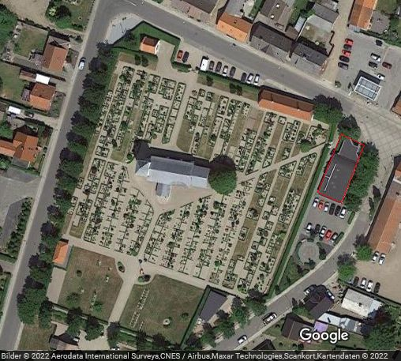
Quelle: Google Maps - 04.04.2022 - Kirche mit umliegendem Friedhof in Horne. Die ehemalige Bank "Andelskassen" - wohl 2011 geschlossen - habe ich rot umrahmt und hier eine Aufnahme vom 30.05.2022.
Hans C. Østergård führt fort, dass die Arbeit ein paar Tage gedauert hätte, da es ordentlich Gestrüpp Richtung Friedhofsmauer gab. Er erinnere sich deutlich, erzählte er weiter, dass es da einen Stein gab, für den man zwei Männer brauchte, um ihn auf den Wagen heben zu können. Er lag dort, wo die Steine im Friedhofsdeich stehen, und er schätzte, dass der Stein etwa hundert Kilo wog. Steine und andere Abfälle von der Rodung des Geländes wurden nach Hause zum Hof gefahren, wo die Steine Teil des Steinhaufens waren, der später zu Trümmern zerschlagen wurde, als der Straßendamm über die Linding Au Ende der 1940er Jahre gebaut worden sei.
H. K. Kristensen hatte zu seiner Zeit keine Skizzen des Runensteinfragments von Østergård anfertigen lassen, aber auf unsere Bitte hin zeichnete er ohne Zögern die Umrisse des Steins sowie die Stellen, an denen die Runen gestanden hatten, führt der Autor weiter aus.
Hans C. Østergårds Skizze des Runensteinfragmentes
vom 15. Oktober 2000, welches er um 1933 auf
dem Kirchhof fand. Die Linien an einem Ende zeigen die einzige Stelle auf dem
Stein an, an der er Spuren von Runen bemerkte. Angefertigt beim Besuch von
Michael Lerche Nielsen in Hornelund (S. 444 in dessen
Aufsatz).
Østergård konnte anhand eines
Fotos des Runensteins aus dem Bildarchiv des Nationalmuseums nicht sagen, ob das
Stück, das er gesehen hatte, zu den Stellen passte, an denen Teile auf dem
erhaltenen Fragment des Steins abgespalten worden sein müssen, glaubte jedoch,
dass der Stein den er gefunden hatte, die gleiche Farbe wie der oben auf dem
Friedhof hatte. Auf unsere Frage, warum er den Vorfall am Friedhofsdeich
gegenüber
H.
K. Kristensen nicht erwähnt habe, entgegnete er, dass er
sich damals keine Gedanken darüber gemacht habe, ergänzt der Verfasser.
Østergård betonte noch einmal, dass auf dem gefundenen Fragment nur wenige Runenlinien gewesen seien. Daraus konnte geschlossen werden, dass die Oberfläche des Runensteins im Zusammenhang mit der Spaltung beschädigt worden war. Eine andere Möglichkeit ist, dass das gefundene Stück die ersten Runen der Inschrift enthielt, wie wir aus unserer Kenntnis der Inschriften auf anderen Runensteinen wissen. Leider kann keine dieser Spekulationen endgültig geklärt werden, da zugegeben werden muss, dass die Skizze des verlorenen Fragments nicht gut zur Form des erhaltenen Fragments passt. Es ist klar, dass der untere Teil der Vorderseite des Steins mit dem unteren Teil der Runeninschrift abgespalten wurde, aber gelegentlich sollten die erhaltenen Spaltspuren auf dem Hornstein genauer untersucht werden, um festzustellen, wie die Spaltung durchgeführt wurde, führt Michael Lerche Nielsen in seiner Abhandlung weiter aus.
Danach wendet sich der Autor der Frage zu, wo der Runenstein ursprünglich stand. Er kommt dabei auf Jon Skonvig und dessen Angabe "...in der östlichen Kirchhofmauer..." von 1629, sowie auf die Angabe aus dem Jahre 1687 des Pfarrers Christen Mortensen Friis "...In der südlichen Kirchhofeinfriedung, neben dem östlichsten Teil..." zu sprechen. Über diese Karte von 1784, die heute im Archiv in Viborg aufbewahrt wird, wird die Kirche von Horne mit der sie umgebenden Friedhofsmauer wiedergegeben, die Michael Lerche Nielsen auf der S. 446 in seinem Aufsatz wiedergibt.
Die gestrichelte Linie, die von Nordosten über die Felder zum Kirchhof führt, endet an einer Stelle in der Umfriedungsmauer. Zweifellos sei dies für ihn der Fundort des heute noch erhaltenen Runensteinfragments von 1872! Das Runensteinfragment, das Hans C. Østergaard Anfang der 1930er Jahre fand, muss dessen Beschreibung zufolge ganz in der Nähe der Stelle im Friedhofsdeich auf dem Boden gelegen haben, wo eben das zweite Fragment 1872 herausgenommen wurde. Da Østergaard die Stelle im Deich, wo sich das heute erhaltene Stück Runenstein befand, nicht kannte, ist seine Beschreibung seines Erachtens ein wichtiges Argument dafür, dass die beiden Runensteinfragmente zum selben Stein gehörten, erklärt Michael Lerche Nielsen weiter. Weder Østergaard selbst noch der Mann auf dem Hof wussten offenbar etwas über den Runenstein, der ca. 60 Jahre zuvor zum Herrenhof Nørholm gebracht worden war, und es ist daher verständlich, dass damals niemand von dem Fragment Kenntnis genommen hatte.
Aber wo war der Runenstein ursprünglich platziert und wann wurde der Runenstein geteilt? Um letzteres vorweg zu nehmen, führt er aus, wir kennen etliche gespaltene Runensteine, die entweder für den Bau von Dorfkirchen in der Zeit um das Jahr 1200 verwendet wurden, oder in denen sie verbaut wurden. Er verweist dazu auf die Runensteine von Læborg und von Bjerring und deren Historie. Bezogen auf den Standort verweist er auf den Fund von Malt und mutmaßt, dass der Runenstein von Horne sicherlich auch an einem frühen Weg, entweder südlich der Kirche oder an einer Furt errichtet wurde.
Über die Webseite von "Historiske Kort" habe ich diese Karte von Hornelund By aus dem Jahr 1817 aufrufen können, die die Situation um die Kirche herum ähnlich wiedergibt.
07.01.2023
In den örtlichen Medien in der Region Varde-Horne wurde im Oktober 2022 über eine Ausgrabung der "Arkæologi Vestjylland" in Horne im Feld hinter "Klokkedoj" berichtet, die vor den Herbstferien abgeschlossen war. Dieses Feld - auf dem ein Sammelbecken für Regenwasser entstehen soll - liegt von Varde kommend am Ortseingang von Horne rechter Hand, ca. 300 m Luftlinie von der Kirche und dem Runenstein entfernt. Es wurde dabei eine wikingerzeitliche Siedlung mit mehreren Grubenhäusern ergraben. In deren Bereich wurden Spuren von handwerklichen Tätigkeiten gefunden. Es wurde auch ein Langhaus - ca. 7 m breit und ca. 21 lang - aufgedeckt. Außerdem wurde auch eine Reihe von Webgewichten zur Herstellung von groben Textilien entdeckt. Bruchstücke von der sog. Pingsdorfer Keramik fanden sich ebenfalls.
Den Eintrag zu diesem Runenstein aus der dänischen Runen Datenbank im Internet kann man hier abrufen.
Die Informationen in "Fund og Fortidsminder" zu dem Runenstein finden sich hier.
Über die Webseite "Runes" - ein Forschungsprojekt der Akademie zu Göttingen - kann man diese Informationen zum Runenstein von Horne abrufen.
Auf den Webseiten des Nationalmuseums in Kopenhagen - Danmarks Kirker - kann man eine in dänischer Sprache gehaltene 25-seitige, bebilderte Abhandlung als pdf-Datei zur Baugeschichte/Innenausstattung der Kirche von Horne aus den Jahren 1988-91 abrufen. Darin findet sich auf der S. 1445 auch der Hinweis, wonach der Stein im Jahr 1953 zurück in den Kirchhof fand.
Via Google Street View kann man heutzutage vom Kirchhof aus in die Kirche von Horne gehen und sich die Innenräume bis vor an den Altar in aller Ruhe anschauen.
Literaturhinweise:
Ribe Amts Runeindskrifter - Kristensen, Marius - Fra Ribe Amt - 1928 - S. 623644 - Hornestein S. 637ff.
Hornelund - Kristensen, H. K. - in: Øster Horne Herred - herausgegeben vom "Historisk Samfund for Ribe Amt - 1944 - S. 197-199
Runestenen i Horne en Hornelund-sten - Kristensen, H. K. - Fra Ribe Amt - 1953 - S. 339341
Hornelund - guld og slagger - Frandsen, Lene B. - Fra Ribe Amt - 1994 - S. 214-220
A Viking-Period and Medieval Settlement at Viborg Søndersø, Jutland - Hans Krongaard Kristensen - 1988 - Journal of Danish Archaeology vol. 7 - S. 191-204
Runestenen i Horne og spørgsmålet om stenens oprindelige placering - Michael Lerche Nielsen - Fra Ribe amt - 2001 - S.441-448
Søren Abildgaard (1718-1791) Fortiden på tegnebrættet - Poul Grinder-Hansen - 2010 - S. 565/Nr. 661 - Hornestein